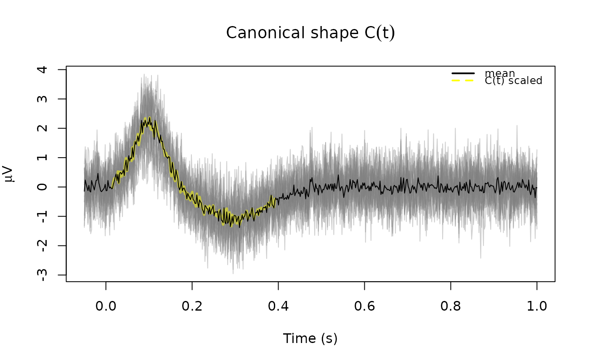
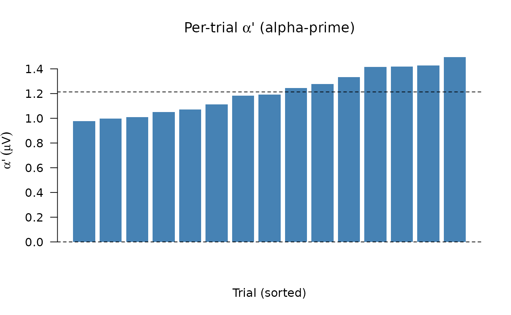
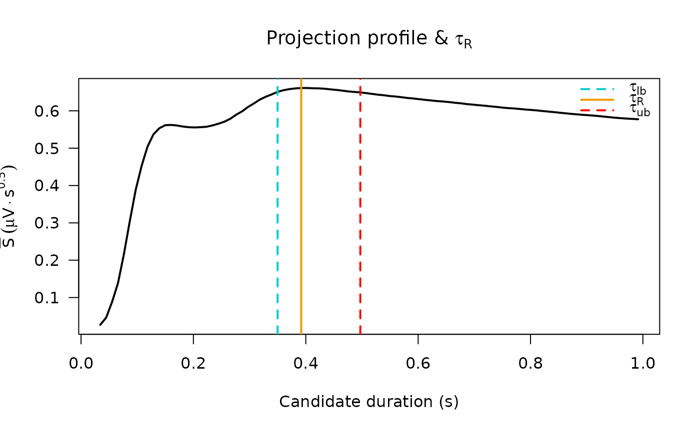

Parameterizes single-trial evoked responses (e.g. cortico-cortical evoked
potentials, CCEPs) using the Canonical Response Parameterization
method (see 'Citation'). The function estimates the response
duration \(\tau_R\), the time after stimulus at which the evoked
response has its most consistent, shared structure across trials.
The estimator is obtained from the time course of cross-trial projection
magnitudes, extracts the canonical response shape \(C(t)\) via a linear
kernel-trick PCA on the trial matrix truncated at \(\tau_R\), and
reports per-trial weights, residuals, signal-to-noise, explained variance
and extraction-significance statistics.
This is an R translation of CRP_method.m (and the surrounding
artifact-rejection / duration-uncertainty logic in
CRP_illustration.m) from the upstream MATLAB reference
implementation; see ‘References’.
Usage
crp(
x,
time,
t_start = 0.015,
t_end = 1,
remove_artifacts = TRUE,
artifact_interval = c("full", "tR"),
artifact_p_threshold = 1e-05,
threshold_quantile = 0.98,
time_step = 5L
)Arguments
- x
numeric matrix of single-trial evoked voltages with shape
time x trials(i.e. rows are timepoints, columns are trials); the matrix orientation matches the variableV/datain the MATLAB reference. At least two trials are required.- time
numeric vector of length
nrow(x)giving the stimulus-aligned time (in seconds) of each row ofx; must be monotonically increasing and span[t_start, t_end].- t_start, t_end
numeric scalars, post-stimulation start and end times (in seconds) defining the analysis window. Defaults match the MATLAB illustration (
0.015 sto1 s).- remove_artifacts
logical; if
TRUE(the default), an initialCRPpass is run to identify outlier/artifact trials, which are then dropped before the final pass. See ‘Details’.- artifact_interval
character, one of
"full"(the default, matching the active option in the MATLAB illustration) or"tR"; selects whether per-trial outlier statistics are computed on the projection magnitudes for the full window or only at the response duration \(\tau_R\).- artifact_p_threshold
numeric, p-value threshold below which a trial is flagged as artifact (provided its mean projection is also below the cohort mean); defaults to
1e-5.- threshold_quantile
numeric in
(0, 1); the fraction of the peak mean projection magnitude used to derive the duration-uncertainty boundstau_R_lowerandtau_R_upper. Defaults to0.98as in the manuscript.- time_step
integer, sampling step (in samples) used when sweeping candidate response duration; defaults to
5L, matching the MATLABt_step. Larger values are faster but smooth the projection profile.
Value
A named list with the following elements:
parametersA list of single-trial parameterizations (
crp_parmsin MATLAB):CNumeric vector of length \(T_R\) (timepoints up to \(\tau_R\)), the canonical response shape \(C(t)\): the first eigenvector of the linear kernel PCA on
V_tR, unit-normalized (\(\|C\| = 1\)). The matching time axis is inparams_times.alNumeric vector of length \(K\) (number of trials), the per-trial alpha coefficient \(\alpha_k = C^\top V_k\): scalar projection of trial \(k\) onto \(C(t)\). Larger magnitude means the trial resembles the canonical shape more strongly; sign reflects polarity relative to \(C\).
al_pNumeric vector of length \(K\), alpha-prime \(\alpha_k / \sqrt{T_R}\):
alrescaled to remove the duration dependence from the unit-norm convention on \(C\). Expressed in \(\mu V\) and comparable across electrodes or conditions with different \(\tau_R\).epNumeric matrix of shape \(T_R \times K\), the per-trial residual \(\epsilon_k(t) = V_k(t) - \alpha_k C(t)\) after the shared component is removed. Access trial \(k\) via
ep[, k].epep_rootNumeric vector of length \(K\), \(\|\epsilon_k\| = \sqrt{\epsilon_k^\top \epsilon_k}\): L2 norm of the residual per trial. Smaller values indicate the canonical shape describes that trial more faithfully.
VsnrNumeric vector of length \(K\), per-trial signal-to-noise \(\alpha_k / \|\epsilon_k\|\). Values \(> 1\) indicate the canonical component is larger than the residual.
expl_varNumeric vector of length \(K\), per-trial explained variance \(1 - \|\epsilon_k\|^2 / \|V_k\|^2\): fraction of each trial's energy accounted for by \(\alpha_k C(t)\). Ranges in \([0, 1]\).
tRNumeric scalar, response duration \(\tau_R\) in seconds: the time at which mean cross-trial projection magnitude is maximized.
params_timesNumeric vector of length \(T_R\), time axis for
C,V_tR,ep, andavg_trace_tR.V_tRNumeric matrix \(T_R \times K\), trial matrix truncated to \(\tau_R\) — the data actually decomposed.
avg_trace_tRNumeric vector of length \(T_R\), simple trial average truncated to \(\tau_R\).
projectionsA list of projection-stage outputs (
crp_projsin MATLAB):proj_tptsNumeric vector, candidate duration time points (seconds) at which projection magnitudes were evaluated.
S_allNumeric matrix; rows are non-redundant off-diagonal trial-pair projections, columns correspond to
proj_tpts. Units: \(\mu V \cdot s^{1/2}\).mean_proj_profileNumeric vector, mean of
S_allacross trial pairs at each candidate duration — the profile whose maximum defines \(\tau_R\).var_proj_profileNumeric vector, variance of
S_allacross trial pairs at each candidate duration.tR_indexInteger, column index into
S_allandproj_tptscorresponding to \(\tau_R\).avg_trace_inputNumeric vector, simple trial average over the full analysis window (not truncated to \(\tau_R\)).
stat_indicesInteger vector, row indices of
S_allused for the significance t-tests, constructed so each trial-pair comparison appears at most once.t_value_tR,p_value_tRt-statistic and one-sided p-value (H1: mean projection \(> 0\)) at \(\tau_R\). Primary extraction-significance test reported in the manuscript.
t_value_full,p_value_fullSame test at the full analysis-window duration.
bad_trialsInteger vector of column indices into the original
xflagged and removed as artifacts;integer(0)when none removed or whenremove_artifacts = FALSE.tau_RNumeric scalar, estimated response duration \(\tau_R\) in seconds (convenience copy of
parameters$tR).tau_R_lower,tau_R_upperNumeric scalars, lower and upper threshold-crossing times (seconds) bracketing \(\tau_R\) at the
threshold_quantilefraction of the peak mean projection magnitude.t_start,t_endThe analysis window used.
sample_rateNumeric, sampling rate inferred from
time.
Details
Briefly, the algorithm proceeds in three stages:
For a sweep of candidate durations \(k\), compute pairwise L2-normalized cross-projection magnitudes between trials truncated to \([0, k]\). The duration that maximizes the mean projection magnitude is taken as the response duration \(\tau_R\).
Apply linear kernel-trick PCA to the trial matrix truncated to \(\tau_R\); the first principal component is the canonical response shape \(C(t)\).
Project \(C(t)\) into each trial to obtain per-trial weights \(\alpha_k\); the residual \(\epsilon_k = V_k - \alpha_k C\) summarizes trial-by-trial deviation from the canonical shape.
Significance is assessed by a one-sided t-test on the off-diagonal projection magnitudes against zero, restricted to a non-overlapping subset of comparison pairs to avoid double-counting.
When remove_artifacts = TRUE, the function performs an initial
CRP pass and runs an unpaired t-test for each trial comparing the
projections it participates in against all other off-diagonal
projections. Trials with p < artifact_p_threshold and
mean projection below the cohort mean are dropped, and CRP is re-run.
References
The CRP algorithm is described in doi:10.1371/journal.pcbi.1011105
,
with a reference MATLAB implementation at
https://github.com/kaijmiller/crp_scripts. See
citation("ravetools") for the full bibliographic entry.
Examples
set.seed(42)
# Synthetic CCEP-like data: shared canonical shape with per-trial scaling
n_time <- 500L
n_trials <- 20L
tt <- seq(-0.05, 1, length.out = n_time)
canonical <- exp(-((tt - 0.10) / 0.05)^2) -
0.5 * exp(-((tt - 0.30) / 0.10)^2)
V <- (outer(canonical, runif(n_trials, 0.5, 1.5)) +
matrix(rnorm(n_time * n_trials, sd = 0.3), n_time, n_trials)) * 2
res <- crp(V, tt)
op <- par(mfrow = c(1, 3), mar = c(4.5, 4, 3, 1))
on.exit({ par(op) })
# ---- Panel 1: all trials (full window) + mean + C(t) overlay ----------
parms <- res$parameters
matplot(tt, V, type = "l", lty = 1,
col = "#80808060", xlab = "Time (s)",
ylab = expression(mu * V),
main = expression("Canonical shape " * C(t)))
# scale C(t) to the amplitude of the mean trace for overlay;
# C(t) ends at tau_R so the line is cut off there naturally
C_scaled <- parms$C * max(abs(rowMeans(V))) / max(abs(parms$C))
lines(parms$params_times, C_scaled, col = "#FFFF0080", lwd = 3)
# Mean
lines(tt, rowMeans(V), col = "black", lwd = 1)
legend("topright", c("mean", "C(t) scaled"),
col = c("black", "#FFFF00"), lty = c(1, 2), lwd = 2,
bty = "n", cex = 0.8)

# ---- Panel 2: per-trial alpha-prime weights -----------------------------
barplot(sort(parms$al_p), col = "steelblue", border = NA, las = 1,
xlab = "Trial (sorted)",
ylab = expression(alpha * "'" ~ (mu * V)),
main = expression("Per-trial " * alpha * "' (alpha-prime)"))
abline(h = c(0, mean(parms$al_p)), lty = 2)

# ---- Panel 3: mean projection profile with tau_R bounds ----------------
proj <- res$projections
plot(proj$proj_tpts, proj$mean_proj_profile, type = "l", lwd = 2,
xlab = "Candidate duration (s)",
ylab = expression(bar(S) ~ (mu * V %.% s^{0.5})),
main = expression("Projection profile & " * tau[R]),
las = 1)
abline(v = c(res$tau_R_lower, res$tau_R, res$tau_R_upper),
col = c("cyan3", "orange2", "red"),
lty = c(2, 1, 2), lwd = 2)
legend("topright",
legend = expression(tau[lb], tau[R], tau[ub]),
col = c("cyan3", "orange2", "red"),
lty = c(2, 1, 2), lwd = 2, bty = "n")

par(op)